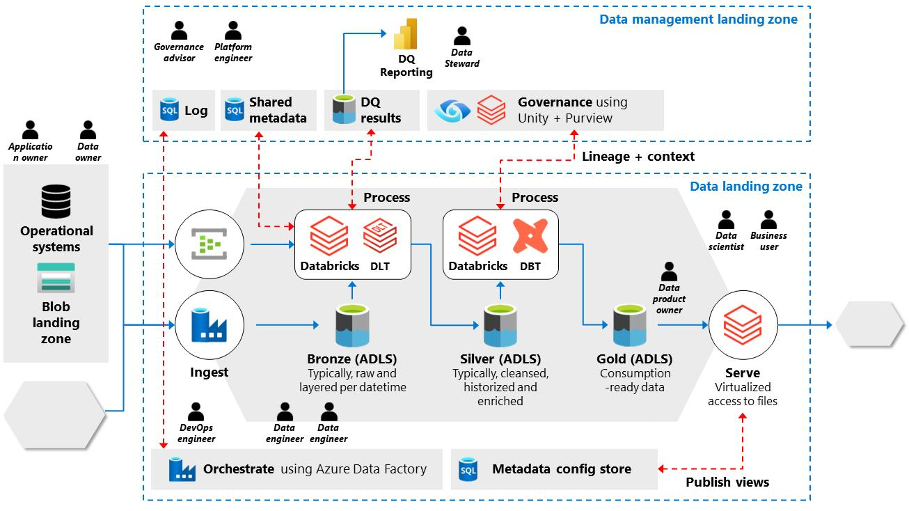
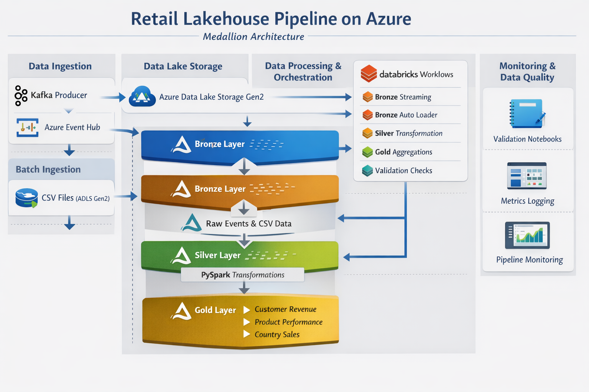
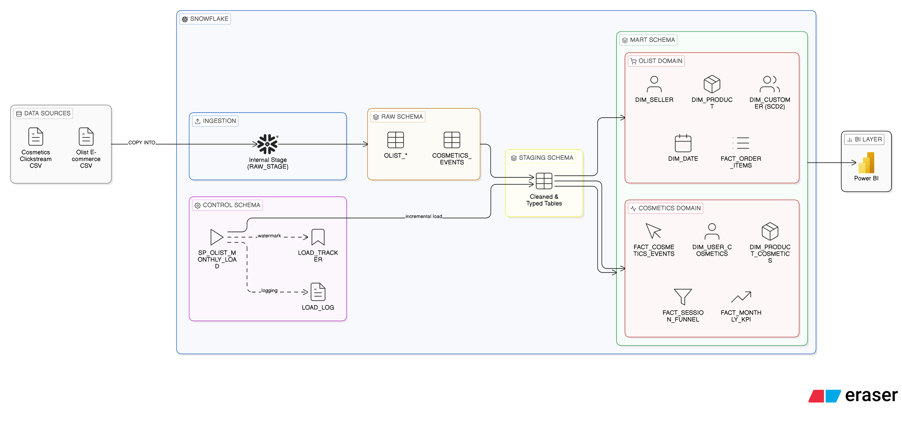
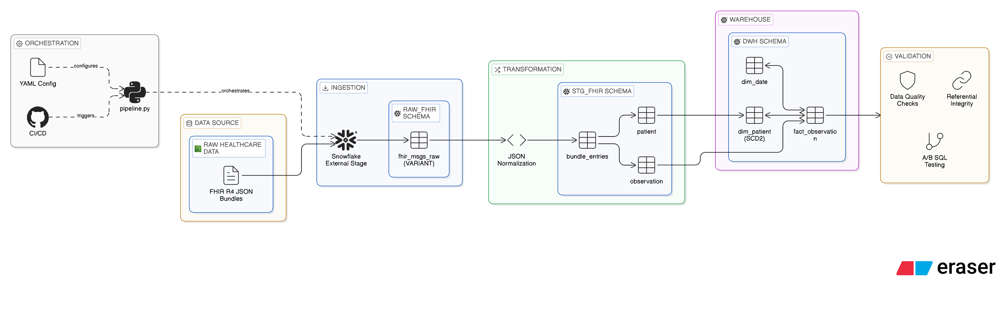
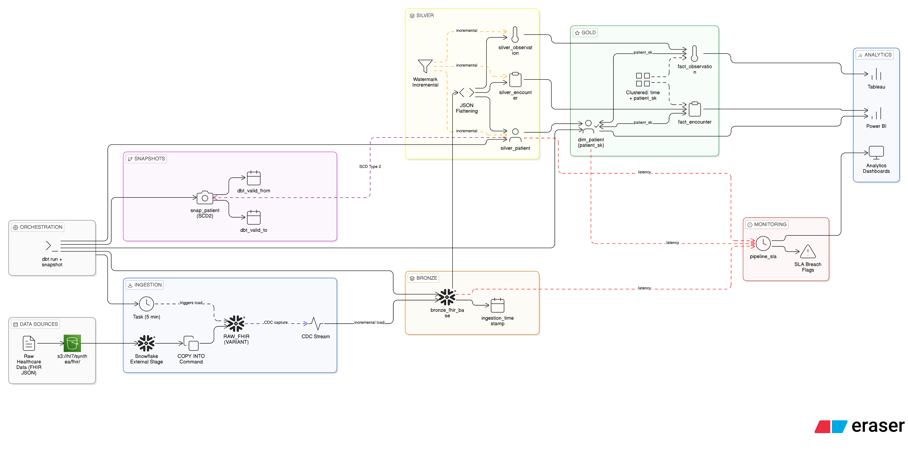
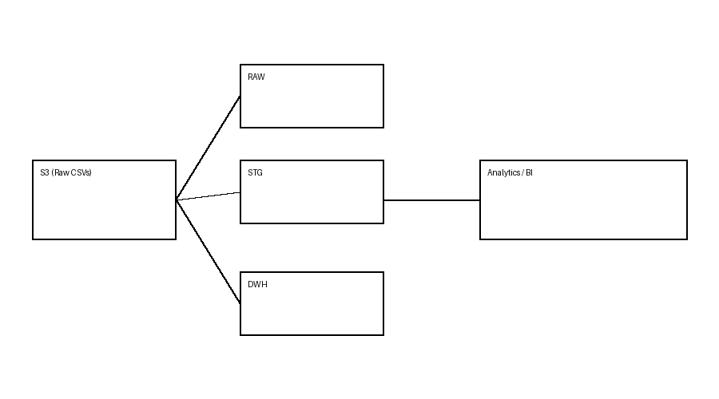
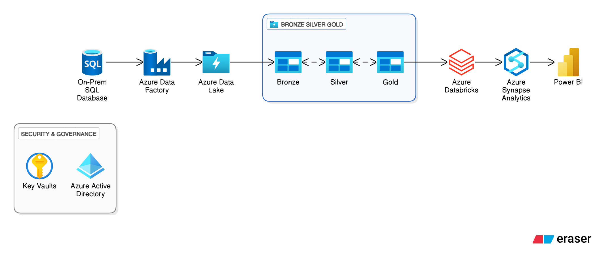
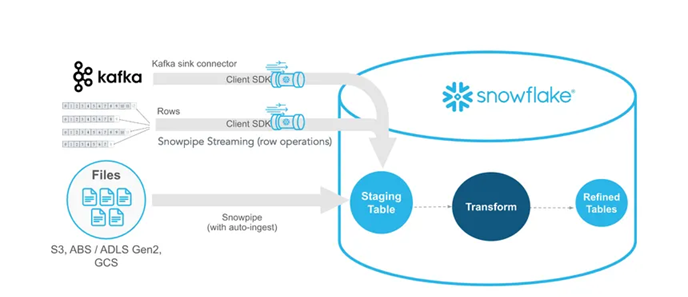

| Project | Retail Lakehouse (Databricks + Delta Lake) – Incremental Medallion Pipeline |
|---|---|
| Tools Used | Databricks, Delta Lake, Unity Catalog, PySpark, SQL, Medallion Architecture, Incremental Processing, SCD Type 2, Power BI, Data Quality & Observability |
| Description | Designed and implemented a production-style Retail Lakehouse architecture using Databricks and Delta Lake. Built a scalable Bronze → Silver → Gold data pipeline with incremental data processing and file tracking. Developed PySpark-based ingestion pipelines for raw data loading into Delta tables, applied data cleaning, validation, and deduplication logic in the Silver layer, and created business-ready dimension and fact tables in the Gold layer using SCD Type 2 for historical tracking. Implemented audit logging, reject handling, and data quality checks to ensure pipeline reliability and observability. Optimized the system for analytics use cases, enabling dashboard-ready datasets for revenue trends, customer insights, and product performance reporting. |
|
 |
| Project | Azure Databricks Lakehouse – End-to-End Retail Data Pipeline |
|---|---|
| Tools Used | Azure Databricks, Unity Catalog, Azure Data Lake Storage Gen2, PySpark, SQL, Delta Lake, Medallion Architecture, Azure IAM |
| Description | Designed and implemented a modern Azure Lakehouse architecture using Azure Databricks and Unity Catalog to process retail transaction data. Built a scalable Bronze → Silver → Gold data pipeline ingesting the Online Retail dataset into Azure Data Lake Storage Gen2. Implemented governed storage access using Databricks Access Connector, Storage Credentials, and External Locations. Developed PySpark ingestion pipelines converting raw CSV data into Delta tables, applied data cleaning and transformation logic in the Silver layer, and created aggregated business-ready analytics tables in the Gold layer for revenue analysis and country-level sales insights. |
|
 |
| Project | End-to-End Cloud Data Warehouse Modernization (Snowflake) |
|---|---|
| Tools Used | Snowflake, SQL, Stored Procedures, Dimensional Modeling, SCD Type 2, Docker, PostgreSQL, Power BI |
| Description | Designed and implemented a production-style cloud data warehouse integrating transactional e-commerce data (Olist) and high-volume behavioral clickstream data (20M+ events). Built a layered RAW → STAGING → MART architecture in Snowflake, implemented SCD Type 2 dimensions with row hashing, and developed an incremental stored procedure pipeline with watermark tracking, duplicate protection, safety validation, and load logging. Modeled separate star schemas for transactional and behavioral domains, engineered session-level funnel analytics, and created executive-ready monthly KPI marts including conversion rate, cart abandonment, and revenue metrics. |
|
 |
| Project | FHIR R4 Data Lake → Snowflake Analytics Warehouse Pipeline |
|---|---|
| Tools Used | Snowflake, Python, AWS S3, FHIR R4, SQL, YAML, GitHub Actions, Synthea FHIR JSON |
| Description | Built an end-to-end healthcare data engineering pipeline that ingests raw FHIR R4 JSON bundles from Amazon S3 into Snowflake using external stages and storage integrations. Implemented a structured RAW → STG → DWH architecture with JSON normalization, UUID reference resolution, and star schema modeling. Designed a fact_observation table joined to SCD Type 2 patient and date dimensions, implemented incremental MERGE logic, enforced referential integrity validation, and built an A/B SQL regression testing framework to safely refactor transformations. The pipeline is environment-driven, idempotent, and CI-ready. |
|
 |
| Project | Scalable HL7 Healthcare Data Platform (Snowflake + dbt) |
|---|---|
| Tools Used | Snowflake, dbt, AWS S3, Snowflake Streams, Snowflake Tasks, SQL, Synthea FHIR JSON |
| Description | Designed and implemented a production-style healthcare analytics platform using a Medallion architecture (Bronze → Silver → Gold). Raw FHIR JSON data is ingested from AWS S3 into Snowflake using Streams and Tasks, transformed incrementally with dbt, and modeled into a star schema with surrogate keys. Implemented SCD Type 2 snapshots for patient history tracking, SLA monitoring for pipeline latency, clustering for performance optimization, and analytics-ready KPI models including admission rates and observation volume. |
|
 |
| Project | Claims Data Pipeline & Warehouse (Healthcare Analytics) |
|---|---|
| Tools Used | AWS S3, Snowflake, SQL, Snowflake Notebooks |
| Description | Designed and implemented a production-style data engineering pipeline for healthcare claims data. Built an end-to-end ELT workflow that ingests raw multi-year inpatient, outpatient, and beneficiary data from S3 into Snowflake, standardizes it using layered schemas (RAW, STG, DWH), and models it into a star schema for analytics. Implemented derived denials using payment logic, handled complex healthcare codes (DRG, ICD-9, HCPCS), and ensured idempotent processing with MERGE-based loads and data quality checks. |
|
 |
| Project | ETL Using Medallion Architecture (Hospital Patient Flow Analytics) |
|---|---|
| Tools Used | Azure Event Hub, Azure Databricks, PySpark, Delta Lake, Azure SQL |
| Description | Designed and implemented an end-to-end streaming ETL pipeline for hospital patient flow analytics using the Medallion Architecture (Bronze, Silver, Gold). Ingested real-time data from Azure Event Hub, applied data cleansing and transformations in Databricks, and persisted curated datasets into optimized SQL tables for downstream analytics and reporting. |
| Project | Azure End-to-End Synapse Analytics ETL Pipeline |
|---|---|
| Tools Used | Azure Data Factory, Azure Databricks, Azure Synapse Analytics, Power BI, SQL |
| Description | Implemented a full end-to-end ETL pipeline starting from an on-premises database and moving through Azure Data Factory for ingestion, Databricks for transformation, and Azure Synapse Analytics for data warehousing. Delivered analytics-ready datasets consumed by Power BI dashboards for reporting and insights. |
|
 |
| Project | Real-Time Streaming and Analytics Pipeline |
|---|---|
| Tools Used | Apache Kafka, Spark Structured Streaming, Snowflake, Streamlit, Python |
| Description | Built a real-time data streaming and analytics pipeline using Kafka for event ingestion and Spark Structured Streaming for processing. Leveraged Snowflake Streams and Tasks for incremental data handling and exposed real-time insights through an interactive Streamlit dashboard. |
|
 |